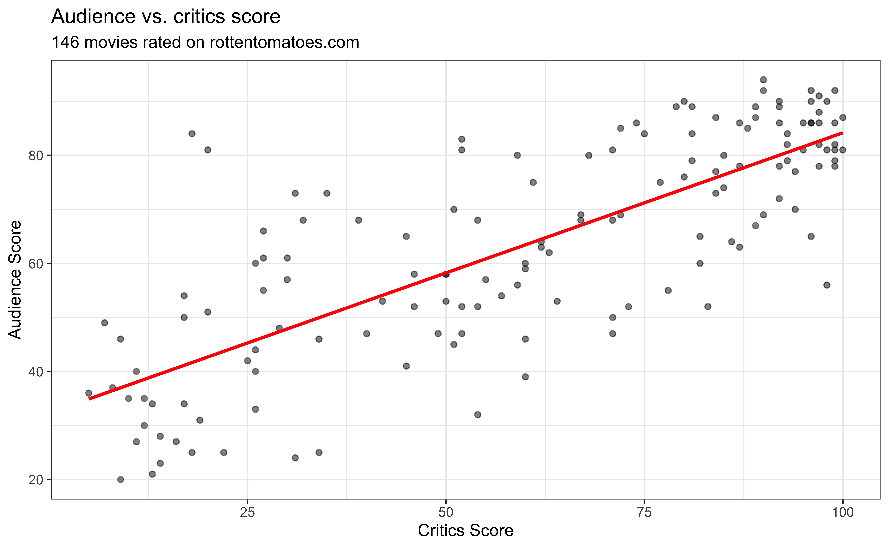
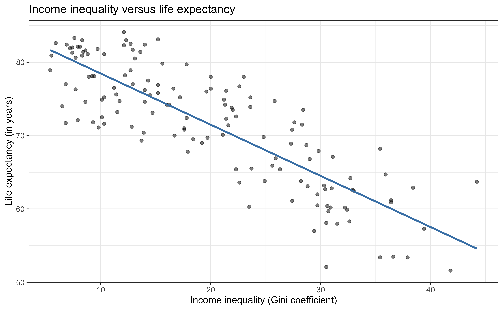
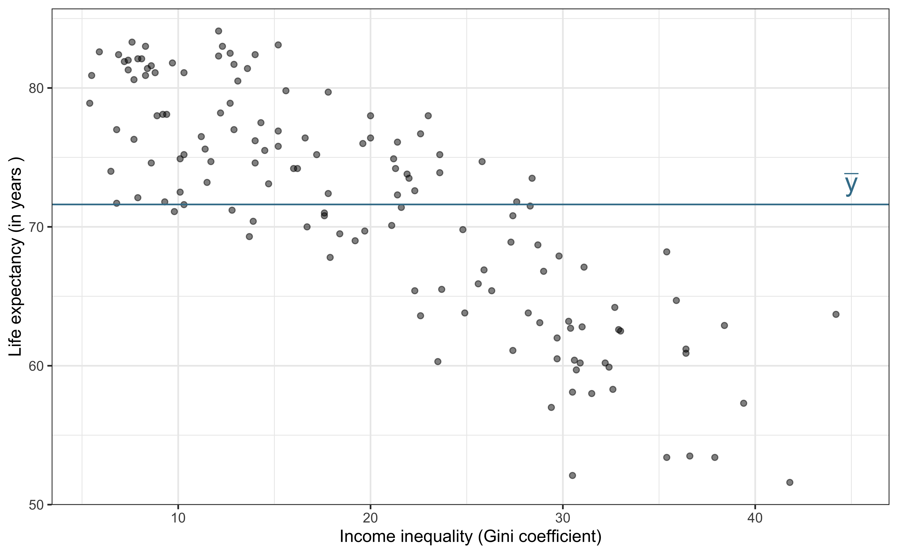
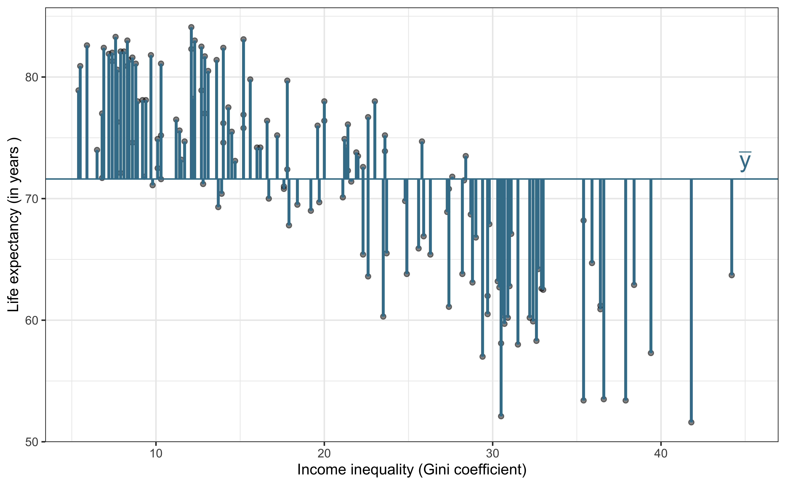
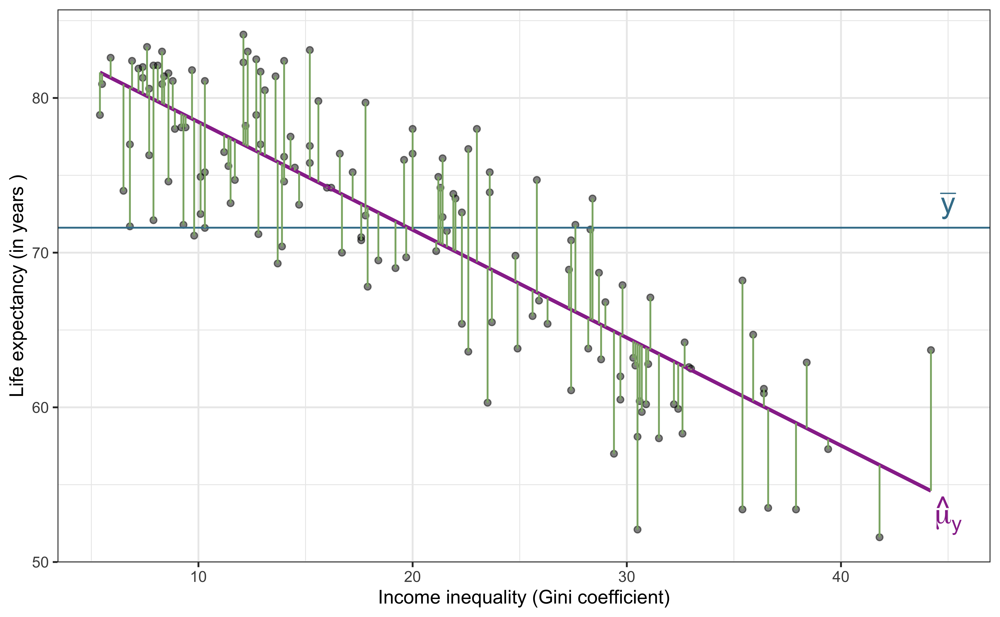

# load packages
library(tidyverse) # for data wrangling and visualization
library(tidymodels) # for modeling (includes broom, yardstick, and other packages)
library(knitr) # for pretty tables
library(patchwork) # arrange plots
# set default theme for ggplot2
ggplot2::theme_set(ggplot2::theme_bw())SLR: Model Assessment
Announcements
- No office hours Mon, Jan 20 - Martin Luther King, Jr. Holiday
- Introduction to R workshops at Duke library
Data wrangling with dplyr - Thu, Jan 16 at 12pm
Data visualization with ggplot2 - Thu, Jan 23 at 12pm
Questions from last class?
Topics
- Predict the response given a value of the predictor
- Use R to conduct exploratory data analysis and fit a model
- Evaluate models using RMSE and \(R^2\)
- Use analysis of variance to partition variability in the response variable
Computing set up
Data: Movie scores on Rotten Tomatoes

\[ \widehat{\text{audience}} = 32.3142 + 0.5187 \times \text{critics} \]
Prediction
Making a prediction
Suppose that a movie has a critics score of 70. According to this model, what is the movie’s predicted audience score?
\[\begin{aligned} \widehat{\text{audience}} &= 32.3142 + 0.5187 \times \text{critics} \\ &= 32.3142 + 0.5187 \times 70 \\ &= \mathbf{68.6232} \end{aligned}\]. . .
Caution
Using the model to predict for values outside the range of the original data is extrapolation. Why do we want to avoid extrapolation?
Linear regression in R
Fit the model
Use the lm() function to fit a linear regression model
movie_fit <- lm(audience ~ critics, data = movie_scores)
movie_fit
Call:
lm(formula = audience ~ critics, data = movie_scores)
Coefficients:
(Intercept) critics
32.3155 0.5187 Tidy results
Use the tidy() function from the broom R package to “tidy” the model output
Format results
Use the kable() function from the knitr package to neatly format the results
Prediction
Use the predict() function to calculate predictions for new observations
Single observation
new_movie <- tibble(critics = 70)
predict(movie_fit, new_movie) 1
68.62297 Prediction
Use the predict() function to calculate predictions for new observations
Multiple observations
more_new_movies <- tibble(critics = c(24,70, 85))
predict(movie_fit, more_new_movies) 1 2 3
44.76379 68.62297 76.40313 Model assessment
Data: Life expectancy in 140 countries
The data set comes from Zarulli et al. (2021) who analyze the effects of a country’s healthcare expenditures and other factors on the country’s life expectancy. The data are originally from the Human Development Database and World Health Organization.
There are 140 countries (observations) in the data set.
Goal: Use the income inequality in a country to understand variability in the life expectancy.
Click here for the original research paper.
Variables
life_exp: The average number of years that a newborn could expect to live, if he or she were to pass through life exposed to the sex- and age-specific death rates prevailing at the time of his or her birth, for a specific year, in a given country, territory, or geographic income_inequality. ( from the World Health Organization)income_inequality: Measure of the deviation of the distribution of income among individuals or households within a country from a perfectly equal distribution. A value of 0 represents absolute equality, a value of 100 absolute inequality (based on Gini coefficient). (from Zarulli et al. (2021))
Univariate exploratory data analysis

Bivariate exploratory data analysis

Application exercise
üìã sta221-sp25.netlify.app/ae/ae-01-model-assessment.html
Complete Part 1.
Clone repo + Start new RStudio project
Go to the course organization. Click on the repo with the prefix
ae-01. It contains the starter documents you need to complete the AE.- If you do not see an
ae-01repo, use this link to create one: https://classroom.github.com/a/6jpkfA8n
- If you do not see an
Click on the green CODE button, select Use SSH (this might already be selected by default, and if it is, you’ll see the text Clone with SSH). Click on the clipboard icon to copy the repo URL.
In RStudio, go to File → New Project → Version Control → Git.
Copy and paste the URL of your assignment repo into the dialog box Repository URL.
Click Create Project, and the files from your GitHub repo will be displayed in the Files pane in RStudio.
Click
ae-01.qmdto open the template Quarto file. This is where you will write up your code and narrative for the AE.
Model assessment
We fit a model but is it any good?
Two statistics
Root mean square error, RMSE: A measure of the average error (average difference between observed and predicted values of the outcome)
R-squared, \(R^2\) : Percentage of variability in the outcome explained by the regression model (in the context of SLR, the predictor)
. . .
What indicates a good model fit? Higher or lower RMSE? Higher or lower \(R^2\)?
RMSE
\[ RMSE = \sqrt{\frac{\sum_{i=1}^n(y_i - \hat{y}_i)^2}{n}} = \sqrt{\frac{\sum_{i=1}^ne_i^2}{n}} \]
. . .
Ranges between 0 (perfect predictor) and infinity (terrible predictor)
Same units as the response variable
The value of RMSE is more useful for comparing across models than evaluating a single model
ANOVA and \(R^2\)
ANOVA
Analysis of Variance (ANOVA): Technique to partition variability in \(Y\) by the sources of variability

Total variability (Response)

| Min | Median | Max | Mean | Std.Dev |
|---|---|---|---|---|
| 51.6 | 72.85 | 84.1 | 71.614 | 8.075 |
Partition sources of variability in life_exp

Total variability (Response)

\[\text{Sum of Squares Total (SST)} = \sum_{i=1}^n(y_i - \bar{y})^2 = (n-1)s_y^2\]
Explained variability (Model)

\[\text{Sum of Squares Model (SSM)} = \sum_{i = 1}^{n}(\hat{y}_i - \bar{y})^2\]
Unexplained variability (Residuals)

\[\text{Sum of Squares Residuals (SSR)} = \sum_{i = 1}^{n}(y_i - \hat{y}_i)^2\]
Sum of Squares
\[ \begin{aligned} \color{#407E99}{SST} \hspace{5mm}&= &\color{#993399}{SSM} &\hspace{5mm} + &\color{#8BB174}{SSR} \\[10pt] \color{#407E99}{\sum_{i=1}^n(y_i - \bar{y})^2} \hspace{5mm}&= &\color{#993399}{\sum_{i = 1}^{n}(\hat{y}_i - \bar{y})^2} &\hspace{5mm}+ &\color{#8BB174}{\sum_{i = 1}^{n}(y_i - \hat{y}_i)^2} \end{aligned} \]
\(R^2\)
The coefficient of determination \(R^2\) is the proportion of variation in the response, \(Y\), that is explained by the regression model
\[\large{R^2 = \frac{SSM}{SST} = 1 - \frac{SSR}{SST}}\]
What is the range of \(R^2\)? Does \(R^2\) have units?
Interpreting \(R^2\)
Submit your response to the following question on Ed Discussion.
The \(R^2\) of the model of life expectancy and income inequality is 70%. Which of the following is the correct interpretation of this value?
- A country’s income inequality correctly predicts 70% of its life expectancy.
- 70% of the variability in life expectancy can be explained by income inequality.
- 70% of the variability in income inequality can be explained by life expectancy.
- 70% of the time a country’s life expectancy can be predicted by its income inequality.
Using R
Augmented data frame
Use the augment() function from the broom package to add columns for predicted values, residuals, and other observation-level model statistics
. . .
life_exp_aug <- augment(life_exp_fit)
life_exp_aug# A tibble: 140 × 8
life_exp income_inequality .fitted .resid .hat .sigma .cooksd .std.resid
<dbl> <dbl> <dbl> <dbl> <dbl> <dbl> <dbl> <dbl>
1 63.8 28.2 65.8 -1.96 0.0125 4.45 0.00125 -0.444
2 78.2 12.2 76.9 1.29 0.0116 4.45 0.000498 0.292
3 59.9 32.4 62.8 -2.93 0.0193 4.44 0.00437 -0.667
4 76.2 14 75.7 0.542 0.00972 4.45 0.0000739 0.123
5 74.6 8.6 79.4 -4.82 0.0168 4.43 0.0102 -1.10
6 83 8.3 79.6 3.37 0.0173 4.44 0.00515 0.766
7 81.3 7.4 80.3 1.04 0.0189 4.45 0.000540 0.237
8 72.5 10.1 78.4 -5.88 0.0144 4.42 0.0130 -1.33
9 71.8 27.6 66.2 5.62 0.0118 4.43 0.00972 1.28
10 74 6.5 80.9 -6.89 0.0207 4.41 0.0260 -1.57
# ℹ 130 more rowsFinding RMSE in R
Use the rmse() function from the yardstick package (part of tidymodels)
rmse(life_exp_aug, truth = life_exp, estimate = .fitted)# A tibble: 1 × 3
.metric .estimator .estimate
<chr> <chr> <dbl>
1 rmse standard 4.40Finding \(R^2\) in R
Use the rsq() function from the yardstick package (part of tidymodels)
rsq(life_exp_aug, truth = life_exp, estimate = .fitted)# A tibble: 1 × 3
.metric .estimator .estimate
<chr> <chr> <dbl>
1 rsq standard 0.700. . .
Alternatively, use glance() to construct a single row summary of the model fit, including \(R^2\):
glance(life_exp_fit)$r.squared[1] 0.7003831Application exercise
üìã sta221-sp25.netlify.app/ae/ae-01-model-assessment.html
Complete Part 2.
Recap
Used R to conduct exploratory data analysis and fit a model
Evaluated models using RMSE and \(R^2\)
Used analysis of variance to partition variability in the response variable
Next class
- Matrix representation of simple linear regression
References
Zarulli, Virginia, Elizaveta Sopina, Veronica Toffolutti, and Adam Lenart. 2021. “Health Care System Efficiency and Life Expectancy: A 140-Country Study.” Edited by Srinivas Goli. PLOS ONE 16 (7): e0253450. https://doi.org/10.1371/journal.pone.0253450.